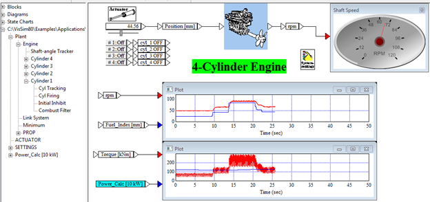
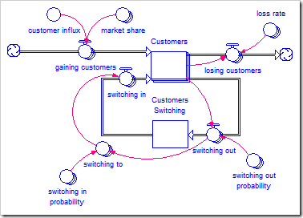

System dynamics programs express equations using a visual metaphor. Before this metaphor was developed, anyone who wanted to simulate a system or procedure had to write a computer program (normally in FORTRAN). The program might well replicate the system accurately, but only the author of the program would know that—everyone else had to take it on faith, because the program code would be indecipherable to everyone but the author.
For example, below is the Wikipedia’s example of a simple FORTRAN II program to calculate the area of a triangle. Enjoy the “My Eyes Glaze Over” effect of trying to understand what it does at your leisure.
LISTING
READ INPUT TAPE 5, 501, IA, IB, IC
501 FORMAT (3I5)
IF (IA) 777, 777, 701
701 IF (IB) 777, 777, 702
702 IF (IC) 777, 777, 703
703 IF (IA+IB-IC) 777,777,704
704 IF (IA+IC-IB) 777,777,705
705 IF (IB+IC-IA) 777,777,799
777 STOP 1
799 S = FLOATF (IA + IB + IC) / 2.0
AREA = SQRT( S * (S - FLOATF(IA)) * (S - FLOATF(IB)) *
+ (S - FLOATF(IC)))
WRITE OUTPUT TAPE 6, 601, IA, IB, IC, AREA
601 FORMAT (4H A= ,I5,5H B= ,I5,5H C= ,I5,8H AREA= ,F10.2,
+ 13H SQUARE UNITS)
STOP
END
A more complex problem would involve hundreds of pages of computer code that no-one could understand (bar, one hoped, the person who wrote it). Jay Forrester, an engineer who had designed Whirlwind (the first computer with a video display for output), was confronted with such a problem: working out for GE why a Kentucky appliance factory had a regular three-year cycle in its employment. He developed a diagrammatic representation of the manufacturing and hiring processes at the factory, and showed that its internal hiring practices generated the cycle.
System dynamics was thus born as a visual way of understanding a complex system. With his background in developing computers that produced visual output on a CRT (“cathode ray tube”; before Whirlwind—and for some time after it—most computers printed their results on line printers), it was a logical step for Forrester to move from hand-drawn diagrams to visual representations of a complex model on a computer screen.
The first such program had a hoot of a name: SIMPLE, which stood for “Simulation of Industrial Management Problems with Lots of Equations” (it therefore qualifies for the annual COCOA award, given by the Committee to Outlaw Contrived and Outrageous Acronyms). After SIMPLE came DYNAMO (based on the slightly less outrageous acronym DYNAmic MOdels), and ultimately the proliferation of modern commercial and Open Source system dynamics programs.
Now there are many programs--both commercial and Open Source--which have built on the initial ideas in SIMPLE and DYNAMO, and they are the workhorse tools of engineers all over the world. Here, for example, is a simple model of a 4 cylinder car (one of the example files supplied with Vissim). Real-world projects are substantially more complicated, but this gives an idea of the complexity of tasks that can be modelled, and the capability for breaking a complex system into sub-units for design purposes.

Management., marketing and social science disciplines use a related class of programs, like Stella. Here is a marketing model of customers switching from one product to another:
